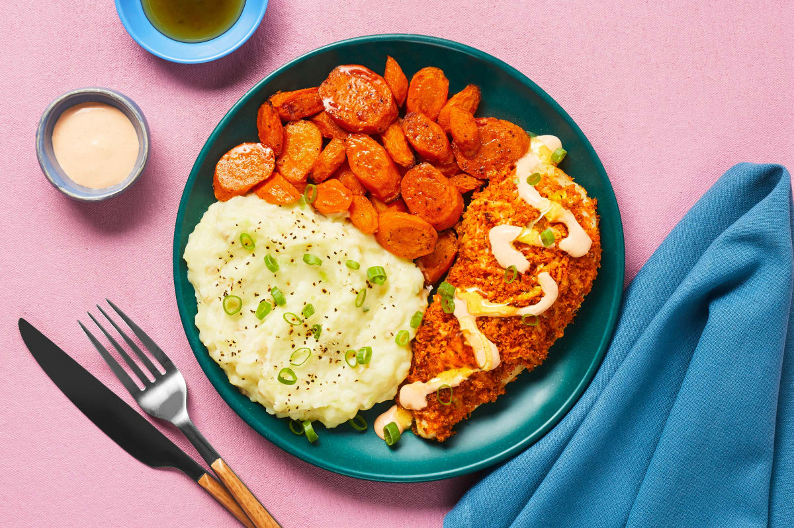

Cayenne Chicken Cutlets

Crispy Kickin' Cayenne Chicken Cutlets with Mashed Potatoes, Carrots & a Honey Drizzle
Our chefs take the beloved sporting event staple, Buffalo wings, from messy app to epic weeknight dinner this week. Chicken is coated in a cheesy, Frank’s Red Hot–spiced panko mixture, roasted to juicy, crunchy perfection, drizzled with creamy Buffalo-style sauce, and a bit of honey. Oh, and did we mention there are buttery roasted carrots and scallion mashed potatoes on the side?! Yeah, it’s safe to say this dish is a slam dunk/home run/touchdown!
Ingredients
- Carrots
- Sour Cream
- Panko Breadcrumbs
- Chicken Cutlets
- Honey
- Scallions
- Frank’s Seasoning Blend
- Monterey Jack Cheese
- Potatoes
- Kosher Salt
- Pepper
- Cooking Oil
- Butter
Steps
- Prep & Make Sauce - Adjust rack to top position (top and middle positions for 4 servings) and preheat oven to 425 degrees. Wash and dry produce. Trim, peel, and cut carrots on a diagonal into ½-inch-thick pieces. Trim and thinly slice scallions, separating whites from greens. In a small bowl, combine half the sour cream (you’ll use the rest later), ½ tsp Frank’s Seasoning (1 tsp for 4), and a big pinch of salt. (Be sure to measure the Frank’s Seasoning—you’ll use the rest in the next step.) Stir in water 1 tsp at a time until mixture reaches a drizzling consistency.
- Mix Panko - Place 1 TBSP butter (2 TBSP for 4 servings) in a medium microwave-safe bowl; microwave until melted, 30-45 seconds. Stir in panko, Monterey Jack, remaining Frank’s Seasoning, and a big pinch of salt and pepper.
- Make Mashed Potatoes - Dice potatoes into ½-inch pieces. Place in a medium pot with enough salted water to cover by 2 inches. Bring to a boil; cook until tender, 15-20 minutes. Reserve ½ cup potato cooking liquid, then drain. Heat a drizzle of oil and scallion whites in empty pot over low heat; cook until softened, 1 minute. Return potatoes to pot; mash with remaining sour cream and 1 TBSP butter (2 TBSP for 4 servings) until smooth and creamy, adding splashes of reserved potato cooking liquid as needed. Season with salt and pepper. Keep covered off heat until ready to serve.
- Roast Carrots - While potatoes cook, lightly oil a baking sheet. Toss carrots on one side of sheet with a drizzle of oil, salt, and pepper (for 4 servings, spread out across entire sheet). Roast on top rack for 5 minutes (you’ll add the chicken to the baking sheet then).
- Coat & Roast Chicken - Meanwhile, pat chicken* dry with paper towels and season with salt and pepper. Mound tops of chicken with panko mixture, pressing firmly to adhere (no need to coat the undersides). Once carrots have roasted 5 minutes, remove sheet from oven. Carefully place chicken, coated sides up, on empty side. (For 4 servings, leave carrots roasting; add chicken to a second lightly oiled sheet and roast on middle rack.) Roast on top rack until chicken is golden brown and cooked through and carrots are browned and tender, 15-18 minutes.
- Finish & Serve - Carefully transfer roasted carrots to a large bowl; add 1 TBSP butter and toss until melted. Divide carrots, mashed potatoes, and chicken between plates. Drizzle chicken with creamy Buffalo sauce and honey (or serve on the side for dipping). Garnish potatoes and chicken with scallion greens and serve.